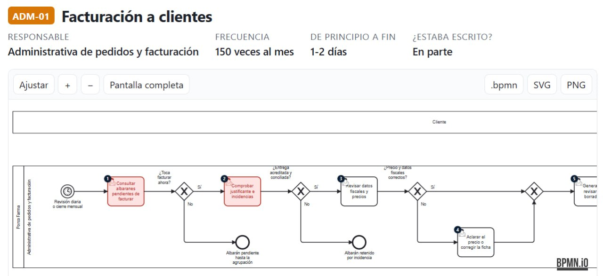
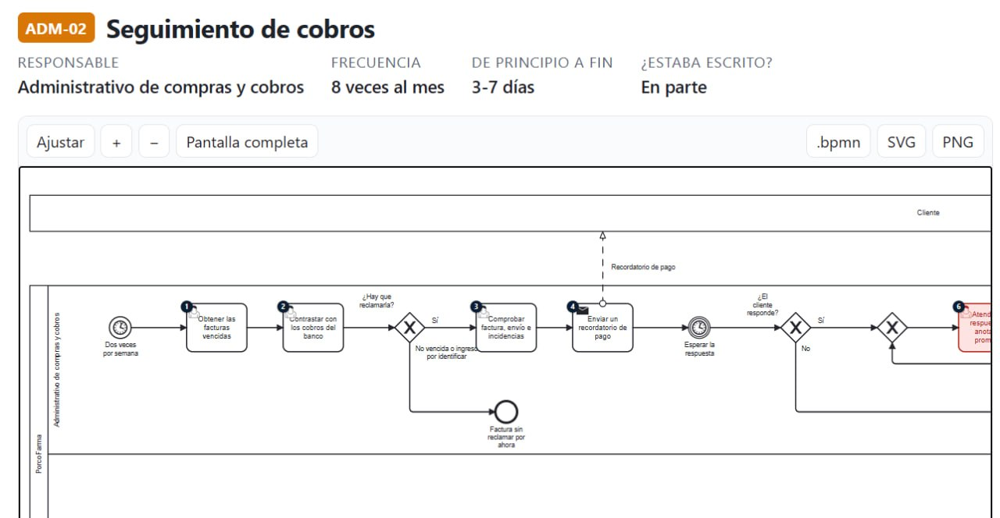
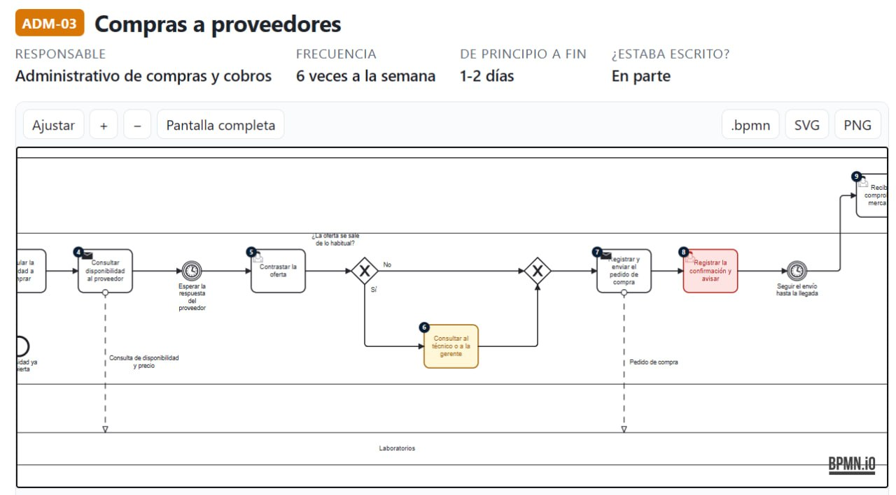
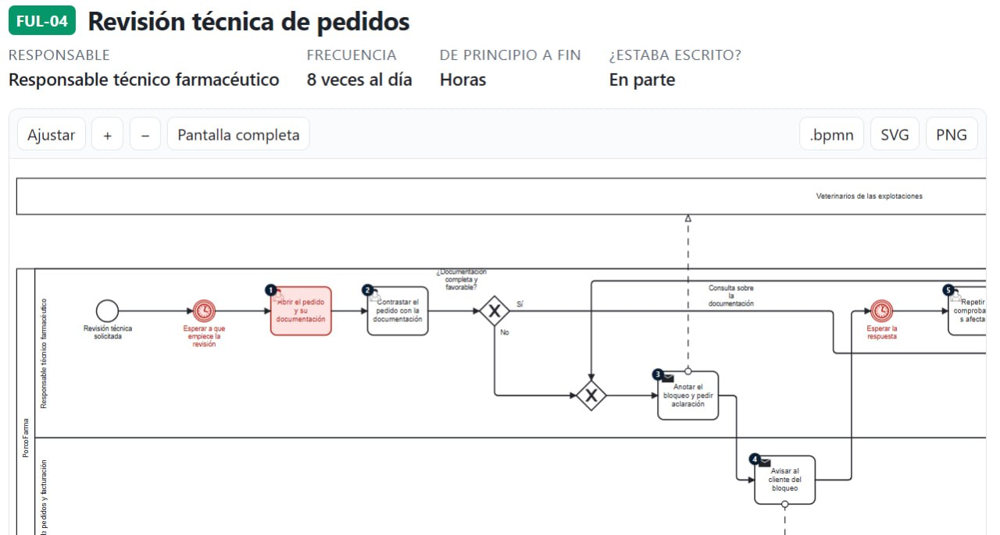

Auditoria de grau consultora · estil KPMG · Deloitte
Estàs perdent diners cada dia que ningú no mira com funciona el teu negoci.
Et demostrem, amb xifres i evidències, què deixa de guanyar la teva empresa — i et deixem un pla tangible per recuperar-ho. Una auditoria seriosa, amb investigació real del teu sector, al nivell de les grans consultores internacionals.
✓ Rigor de consultora amb fonts citades✓ Equip d’agents d’IA que investiguen a les millors fonts del món✓ Pla de retorn, no un informe per arxivar
Ho reconeixes?
El teu negoci funciona. Però a quin preu?
Quasi cap PIME no és conscient del que li costa, cada mes, el que fa "com sempre". Aquests són els símptomes que més diners es mengen en silenci.
€
Processos manuals
Feines repetitives que algú fa a mà setmana rere setmana, amb errors i sense que ningú arribi a mesurar-les.
⇄
Dades escampades
La informació viu a deu llocs: la web, el correu, un Excel, un paper. Ningú la connecta, així que cap decisió es basa en cap dada real.
✕
Oportunitats que fuixen
Clients que es perden, repeticions que no es conreen, hores "perdudes" en gestió que ningú no comptabilitza.
La pregunta incòmoda
Quant et costa, cada mes, no saber-ho?
Cada un d'aquests és un número que pots no estar veient a cap pantalla. La nostra feina és fer-los visibles i posar-los en euros.
≈1.200 €/mes
Hores perdudes en tasques manuals que una màquina podria fer soles, reconvertides en euros.
≈1.900 €/mes
Clients que marxen al competidor simplement perquè ningú no els fa el seguiment.
≈2.400 €/mes
Margin i ingressos que no es capturen perquè cap dada està connectada ni es mesura.
Exemples il·lustratius del tipus de números que una auditoria posa sobre la taula en el teu cas concret. Cada empresa és diferent; la nostra feina és calcular-ho per a la teva.
Com ho fem
Un equip d’intel·ligències que investiga el teu món. Un director que ho resumeix tot.
No et donem un llistat genèric. Muntem un equip d’agents d’IA especialitzats —cadascun dedicat a una peça del teu negoci— supervisats per un agent director que ho coordina i ho contrasta amb les millors fonts d’internet i del món.
1
Agents d’investigació per àrea
Un equip d’agents es desplega en paral·lel: un es capbussa al teu sector, un altre als teus competidors reals, un altre als benchmarks internacionals de la teva indústria, un altre a quines eines i automatitzacions es fan servir avui al món.
2
Només autoritat, sempre citada
Cada dada es contrasta amb les millors fonts: analistes internacionals (Gartner, IDC, Forrester), grans consultores (McKinsey, Deloitte, KPMG), instituts estadístics i associacions del teu sector. Res no entra a l’informe sense origen, com fan les consultores de primer nivell.
3
L’agent director ho posa tot en ordre
Un intel·ligència central supervisa l’equip, encreua les troballes amb les teves dades internes i en treu un judici consultor: on ets, què et falta i què t’has de treballar primer.
És aquest mateix rigor que aplicaria una gran consultoria — però amb la velocitat, la profunditat i el tracte que només una empresa centrada al teu cas pot oferir.
Els teus processos, al descobert
Mapejem els teus processos i hi trobem on perds hores i diners.
Dibuixem els teus processos amb BPMN —el llenguatge internacional estàndard dels processos de negoci que fan servir les grans consultores. Així cada pas, cada tasca manual i cada coll d’ampolla es fa visible.
Seguidament veus tres fluxos senzills d’exemple per explicar-te el procediment: el dibuix del procés com es fa avui, marcat amb vermell allà on hi ha l’error, i amb verd com la IA ho posaria bé. Cada flux real és molt més ric — i el teu és el que mapejem sencer a la teva auditoria.
01
Facturació manual
Poc eficient · hi perds hores i diners
Aquí s’hi perden hores i diners: sis hores a la setmana de feina a mà i dos errors al mes que cal refer. Amb la facturació automàtica, això cau a gairebé zero i l’equip s’hi estalvia mig dia cada setmana.
02
Atenció al client
Poc eficient · hi perds clients i temps
Aquí hi perds clients i temps: cada consulta que espera a l’horari laboral és algú que pot acabar al competidor. Amb un agent que respon en el moment, de dia i de nit, cap lead no es refreda.
03
Inventari / estocs
Poc eficient · hi perds vendes
Aquí hi perds vendes: els desajustos d’estoc o et deixen sense producte (i el client s’estira) o t’acumulen més del compte. Amb el recompte sincronitzat en temps real s’acaben els trencaments.
Passa béOn hi ha l'error · s’hi perden hores i dinersLa solució · com la IA ho posaria bé
Anàlisi de fluxos · casos reals
Això és el que lliurem quan mapejem el teu negoci.
Aquestes són captures reals del mapa de processos en BPMN que entreguem als clients quan contracten l’anàlisi de fluxos: el teu procés de principi a fi, amb el responsable, la freqüència i si està o no per escrit. Així es veu on perds hores i diners — i què cal ordenar primer.
ADM-01 · Facturació a clients

150 factures/mes · administrativa de comandes i facturació · durada 1–2 dies. Quatre checks manuals abans d’emetre: preus, dades fiscals, albarans i incidències — cada un, un possible coll d’ampolla.
ADM-02 · Seguiment de cobros

8 cops al mes · administratiu de compres i cobros · 3–7 dies per cobrar. Un deute "vençut" pot quedar setmanes sense reclamar-lo si ningú no el mira.
ADM-03 · Compras a proveedores

6 cops per setmana · administratiu de compres · 1–2 dies per pedir. Consultes de disponibilitat a mà, esperant resposta del proveïdor — prou temps perquè un preu quedin desactualitzat.
FUL-04 · Revisió tècnica de comandes

8 cops al dia · responsable tècnic · hores en la revisió. Documentació que falta, esperes per aclariments i bloquejos que avisen a mà — la feina de vetllar es menja mitja jornada.
Cada procés real es lliura amb el mapa complet en BPMN, les falles quantificades en hores i euros, i la via concreta per resoldre-les. Amb l’auditoria, ho teniu tot per començar.
Com funciona
En 5 setmanes saps exactament on i quant pots estalviar.
1
T’escoltem
Una conversa per entendre el teu negoci, com treballes, què et fa perdre temps i què et preocupa. Sense pressa i sense pressió.
2
Recollim les dades
Un qüestionari pensat per no fer-te perdre el temps: et guiem pas a pas per les dades que fan falta per a una anàlisi seriosa.
3
L’equip d’agents investiga
Els agents d’IA exploren el teu sector, els teus competidors i els benchmarks del món, i l’agent director ho contrasta tot amb fonts d’autoritat.
4
Anàlisi profunda
DAFO, maduresa digital en sis dimensions, findings d’auditoria (condició → causa → efecte → recomanació) i mapa de processos amb les falles quantificades.
5
Informe que impressiona
Reps un paquet complet: informe web interactiu, PDF, Excel de dades, resum d’una pàgina i la presentació per al teu consell.
6
Pla de retorn
Un pla prioritzat 30/60/90 dies amb què fer, qui ho fa, quan i —el més important— quant et retorna cada acció.
Què rebràs
No són "un document". És un paquet complet que impressiona el teu consell.
Et lliurem un conjunt d’entregables pensat com fan les grans consultories: perquè tu ho entenguis en cinc minuts, el teu equip ho pugui fer servir i el teu consell s’ho prengui seriosament. Res de "un informe per arxivar".
Informe web interactiu
Un informe fet com una web premium que obres i ensenyes al teu equip des de qualsevol dispositiu: gràfics animats, findings d’auditoria i el pla de millora. És el protagonista del lliurament.
PDF executiu de l’informe
La versió imprimible i professional, amb enllaços clicables a cada font. Perfecte per adjuntar al correu, arxivar i portar a l’acta del consell.
Presentació per al consell
Un deck de poques diapositives i números grans, llest per projectar. Una idea per pantalla i tota la narrativa ben muntada perquè la decisió es prengui.
Resum d’una pàgina
El one-pager amb la tesi central, tres números i la decisió sol·licitada. Per imprimir, compartir per WhatsApp i tancar la venda amb una mirada.
Les teves dades, en el teu format
Totes les dades netes i estructurades, lliurades en Excel, CSV i JSON — per fer-les servir, importar-les o connectar-les amb el que tinguis. No et deixem dades tancades dins d’un informe.
Excel · CSV · JSON
Model d’impacte jugable
Canvia les teves xifres —hores, % de reserves online, costos— i veu el retorn recalculat en directe. És el "wow" que fa que interioritzis el valor i juguis amb els teus números.
Mapa de processos en BPMN
Els teus processos representats amb el llenguatge estàndard de les consultores internacionals, amb cada falla quantificada en hores i euros i la via per resoldre-la.
Revisió de ciberseguretat
Com tens les dades, els accessos i el compliment? Et fem una avaluació de seguretat i un pla per començar a tapar els riscos — perquè el teu negoci no sigui el proper titular.
Seguretat · Compliment
Exhibit 01 · Estil Gartner — on és la teva empresa
La majoria d’empreses amb resultats reals ja no estan al pic de les expectatives: són al pendent on la IA deixa de ser "fum" i es converteix en estalvi tangible. Et situem exactament on ets — i què t’estàs perdent per no ser-hi.
Exhibit 02 · Estil Deloitte — maduresa digital en 6 dimensions
Mesurem el teu grau de maduresa en les sis dimensions que fan servir les grans consultores. Veus d’un cop d’ull on ets, on has de pujar i què et separa del nivell líder.
Tots els entregables es lliuren en llenguatge clar i amb el rigor de consultoria: cada xifra té font o està marcada com a estimació, i cada recomanació té propietari i termini. Aquest és el paquet que esperaries de KPMG o Deloitte — fet per a la teva empresa.
Ben preguntat
El que et deus estar preguntant.
Val la pena? Per què no és simplement "car"?
Perquè no et venem un informe: et venem un retorn demostrat. Sortiràs de l’auditoria sabent exactament quines accions et recuperen diners, quantes hores deixes de perdre i en quin termini es paga sola cada millora. Si en algun moment veus que no hi ha retorn, t’ho diem — no és el nostre estil vendre fum.
Per què vosaltres i no una gran consultoria?
Apliquem el mateix rigor que KPMG, Deloitte o McKinsey — metodologia, fonts d’autoritat, findings d’auditoria i mapes de processos en BPMN. Però ho fem amb la velocitat i el tracte directe d’un equip centrat al teu cas, no amb una auditoria de desenes de milers d’euros ni amb rotacions de consultors.
Quantes hores em fa perdre?
Molt poques. Un qüestionari guiat de menys de mitja hora, una conversa inicial, i nosaltres fem la resta. Tua feina és dirigir i aprovar, no entrar en tecnicismes.
I si no som prou grans?
L’auditoria està pensada per a pimes — és just allà on hi ha més diners amagats en processos manuals i dades escampades. I alhora, la metodologia és prou profunda perquè una empresa més gran també hi encaixi.
Cada mes que ho ajornes et costa diners
El teu sector ja no espera. Ni els teus competidors.
Descobreix quant pot estalviar la teva empresa i surt amb un pla clar. Places limitades per trimestre per garantir la profunditat de cada auditoria.